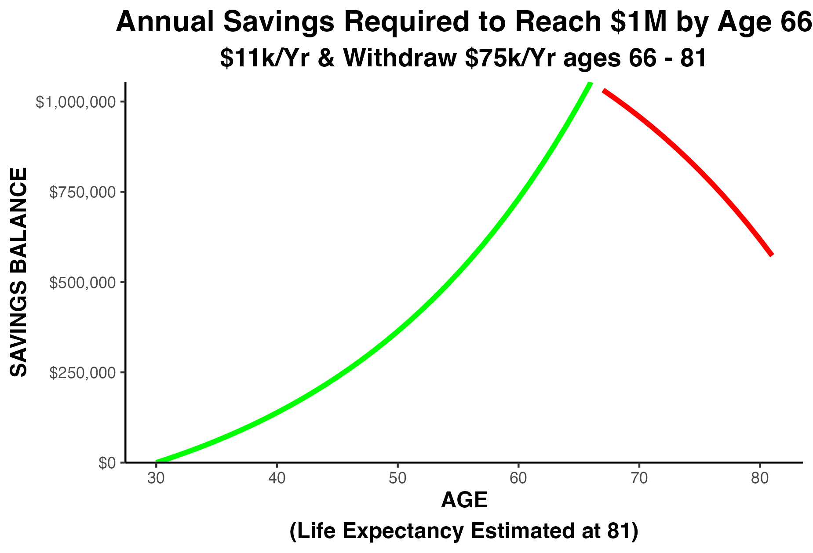
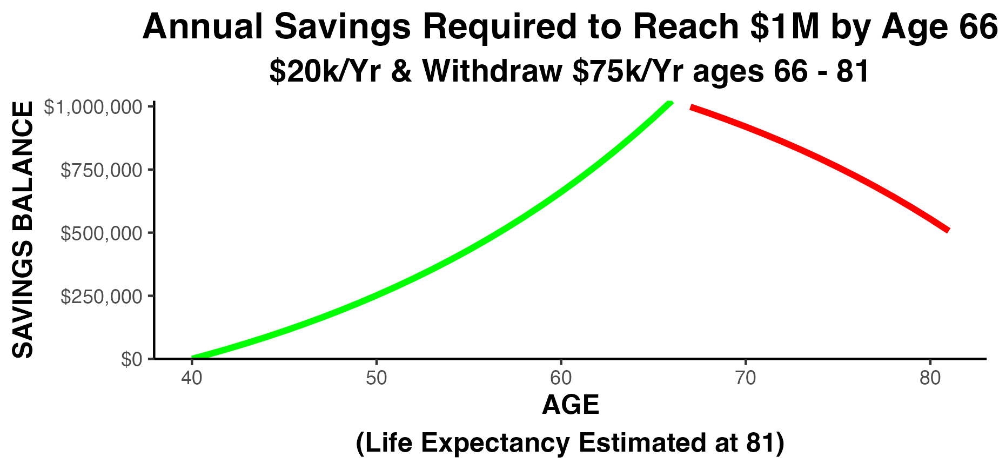

17 Calculate Your Desired Minimum Sales
PRINCIPLE: Know Your Desired Minimum Sales Level Before You Begin Marketing. Your Desired Minimum Sales will determine the type of customer you need to attract to your business.
What is your DESIRED MINIMUM SALES level?
HOW do you figure that out?! WHY is it so important?

If Your SALES are TOO SMALL Your TOTAL PROFIT will be TOO SMALL.
If your total profit is too small…
You can work your life away and never gain financial security
It can drain your life savings, 
The strain on your personal life can lead to serious health and life problems, 

Your disappointments will be many 
You will work forever, with no possibility of retirement

Those are some of the important WHYs to set a Desired Minimum Sales level.
17.1 HOW to figure out your Desired Minimum Sales Level
Estimate just 6 things and you can compute your estimated ‘Desired Minimum Sales’:
- Your Desired Gross Salary (sufficient to cover your cash needs, and your wants)
- Your Desired Annual Personal Retirement contribution
- Annual healthcare premiums for you and your family
- FIXED business costs for ‘Labor’ (as a percentage of gross sales), and
- FIXED business costs for all ‘Other Expenses’ (as a percentage of gross sales)
- Net Business Profit desired, after ALL expenses (to be used for next year’s working capital)
17.2 Estimate Your Desired Gross Salary Level
Now, the first thing on that list is your ‘Desired Gross Salary’. Right now you are probably just paying yourself ‘what the company can afford.’ But, the estimate of your ‘Desired Minimum Sales’ must be based on what you want your salary to become, not what it is right now.
Your Desired Gross Salary must be large enough to cover your cash requirements for:
- food

- utilities
- shelter (in a safe neighborhood)

- some financial security

- healthcare safety

- education for loved ones

- charitable giving (if you’re so inclined)

Add these items up.and that’s your NET Your Desired Gross Salary. A simple conversion factor will transform the net salary figure into a GROSS Salary figure.
Here’s an example of the entire calculation using fictitious amounts:

17.3 Estimating Your Desired Minimum Sales
In outline form the calculation grid looks like this:
| Estimate Needed | Amount |
| Your Desired Gross Salary | $ ??? |
| Personal Annual Personal Retirement Contribution | $ ??? |
| Personal Annual Personal Health Premiums | $ ??? |
| Fixed Business Labor Cost | ?? % |
| Fixed Business Business Other Costs | ?? % |
| Residual Business Profit Needed | $ ??? |
Assume you worked out the calculation and you want your GROSS salary to be $150,000 annually
| Estimate Needed | Amount |
| Your Desired Gross Salary | $150,000 |
Next, the business must cover your Annual Personal Retirement plan contribution. This depends entirely on WHEN you begin your retirement savings. Let’s look at several scenarios…
Let’s assume your goal is to save $1,000,000 by the time you are 66 years old
Starting at
age 30:
$11,000
annually to
reach $1M by
age 66:

Starting at
age 35:
$15,000
annually to
reach $1M by
age 66:
Starting at
age 40:
$20,000
annually to
reach $1M by
age 66:

Starting at
age 45:
$30,000
annually to
reach $1M by
age 66:
Starting at
age 50:
$45,000
annually to
reach $1M by
age 66:
The required contribution increases DRAMATICALLY if you start later. Click the ‘PLAY’ button below and watch as the amount you need swoops upward with age…
WHEN you begin your retirement savings will MATTER to your business growth:
How much you need is NOT a straight line; it swoops upward more and more as you approach age 50. Soooo, the lesson is: Your company must grow large enough, and fast enough, or you will not be able to retire at any age!
Think it’s impossible to be a ‘late bloomer’? Watch this clip of Warren Buffet describing an ambitious but determined soul starting a business at the age of 40!
The Inspirational Story of Enterprise Rent A Car by Warren Buffet
Let’s say your choice of retirement plan contribution turns out to be $15,000. The calculation grid now looks like this:
| Estimate Needed | Amount |
| Your Desired Gross Salary | $150,000 |
| Annual Personal Retirement Contribution | $15,000 |
After salary and retirement, you must estimate your annual family healthcare premiums. You’re probably already paying premiums so that should be an easy one to estimate. Let’s say you pay premiums of $18,000 annually for a family of 3. The calculation grid now looks like this:
| Estimate Needed | Amount |
| Your Desired Gross Salary | $150,000 |
| Annual Personal Retirement Contribution | $15,000 |
| Annual Personal Health Premiums | $18,000 |
Next, estimate your desired net profit (after expenses). This represents next year’s working capital. For demonstration purposes let’s say that $50,000 of profit will allow you to safely operate in the new year. The calculation grid now looks like:
| Estimate Needed | Amount |
| Your Desired Gross Salary | $150,000 |
| Annual Personal Retirement Contribution | $15,000 |
| Annual Personal Health Premiums | $18,000 |
| Residual Profit | $50,000 |
Finally, you must estimate your…
FIXED labor expenses (as a percentage of your gross revenue). Fixed expenses stay almost the same no matter how large your sales become (they’re ‘fixed’).

For a personal service company those percentages are usually around 33% for ‘Fixed Labor…’ and 33% for ‘Fixed Other Expenses’
Examine your company Profit & Loss Statement to find out what your fixed cost percentages are. All modern accounting software will produce a Profit & Loss Statement showing expenses as percentages of Gross Sales (Revenue).
Reporting line items on the Profit & Loss Statement as percentages of gross sales is called ‘normalizing’ the financial statement. It’s often easier to think about your profits and expenses in percentages. It certainly will make the math much easier! Retailers are GREAT at this. Service companies…not so much,
Here’s a stylized example for a manufacturing or retail business…

Here’s an example of a service business (like a CPA firm)…
“NORMALIZED” PROFIT & LOSS STATEMENT FOR SERVICE FIRM
| Amount | Pct | |
| Sales | $500,000 | 100% |
| ‘Fixed’ Labor Cost | (166,000) | 33% |
| ‘Fixed’ Business Other Costs | (166,000) | 33% |
| Net Profit | $168,000 | 34% |
Let’s recap our Desired Minimum Sales calculation (assuming a retail or manufacturing company)…
| Estimate Needed | Amount |
| Your Desired Gross Salary | $150,000 |
| Annual Personal Retirement Contribution | $15,000 |
| Annual Personal Health Premiums | $18,000 |
| ‘Fixed’ Business Labor Costs Percentage | 20% |
| ‘Fixed’ Business Other Costs | 35% |
| Residual Profit | $50,000 |
17.4 Using the Extimation Wizard
Using these example figures, how much would you guess the Desired Minimum Sales needs to be?
- A. around $300,000?
- B. around $500,000?
- C. around $700,000?
- D. around $1,000,000?
Click on the link below and use the pop-up widget to calculate this estimate in real time…
(You can print your results to a printer, or preserve a pdf copy of your estimate, by clicking on the ‘PRINT’ button in the widget)
What if we increase owner’s Your Desired Gross Salary by $50,000 to a total of $200,000? Use the wizard again to recalculate the estimate…
(You can print your results to a printer, or preserve a pdf copy of your estimate, by clicking on the ‘PRINT’ button in the widget)
Would you have guessed sales would need to increase by nearly $150,000 to support a $50,000 increase in owner salary??
So, how did you do? Did you guess too high, or too low?
Congratulations to those who guessed too HIGH! Most people guess too LOW.
You now have a pretty good idea of the MINIMUM SALES your company must achieve to reach your goals and dreams!
Revist these pages to update your estimates as your goals and dreams change over time.